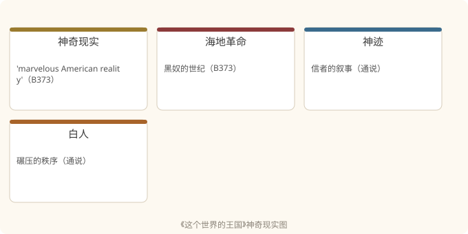

这个世界的王国
一、基本信息
| 作者 | 阿莱霍·卡彭铁尔 |
|---|---|
| 成书/出版 | 1949年（Britannica B373：El reino de este mundo (1949)——'the first to enjoy wide acclaim'） Alejo Carpentier y Valmont — Encyclopaedia Britannica（百科全书） |
| 国别/地区 | 古巴 |
| 时代 | 近代 · 20世纪40年代末 |
| 体裁 | 长篇小说 |
| 语言 | 西班牙语 |

《这个世界的王国》神奇现实图（主题·结构图）
二、创作背景
Britannica（B373）：'is about the Haitian revolution'——海地革命史。
Britannica（B373）：其序言'expounds on magic realism, which he defines as the representation of "marvelous American reality"'——魔幻现实主义的经典表述。
Britannica（B373）：卡彭铁尔——音乐学家与作家（B053 交叉：马尔克斯承之）。
三、内容脉络
（通说待核）海地革命（1750-1820——B373 交叉口径）：黑奴蒂-诺埃尔的见证。
（通说待核）'人变兽'的神奇现实：马坎达尔的神迹与烧毁。
四、主要人物表
| 人物 | 身份 | 说明 |
|---|---|---|
| 蒂-诺埃尔 | 黑奴/见证者 | （通说待核） |
| 马坎达尔 | 起义领袖 | （通说待核） |
五、主题与艺术特点
- '神奇的美国现实'（B373：marvelous American reality）。
- 海地革命的暴力循环（B373：Haitian revolution）。
- '信者见神迹'的叙事伦理（通说待核）。
六、影响与评论
- Britannica：魔幻现实主义序言（B373）。
Alejo Carpentier y Valmont — Encyclopaedia Britannica（百科全书） - Britannica：马尔克斯等拉美作家的先声（B053 交叉）。
Gabriel García Márquez — Encyclopaedia Britannica (by Roberto González Echevarría)（百科全书）
七、阅读建议
难点
- 海地革命史（杜桑等——通说待核）。
- '神奇现实'与'魔幻'的术语。
- 《这个世界的王国》中译名（《人间王国》）待核。
- 西班牙文原版。
魔幻现实主义源头首选；与《百年孤独》对读。
八、待核实
- 蒂-诺埃尔/马坎达尔人名核对（通说）。
- 1949年出版细节待核。
- '1750-1820'年代口径核对（B373 交叉）。
本页主要来源
阿莱霍·卡彭铁尔的其他收录作品：这个世界的王国